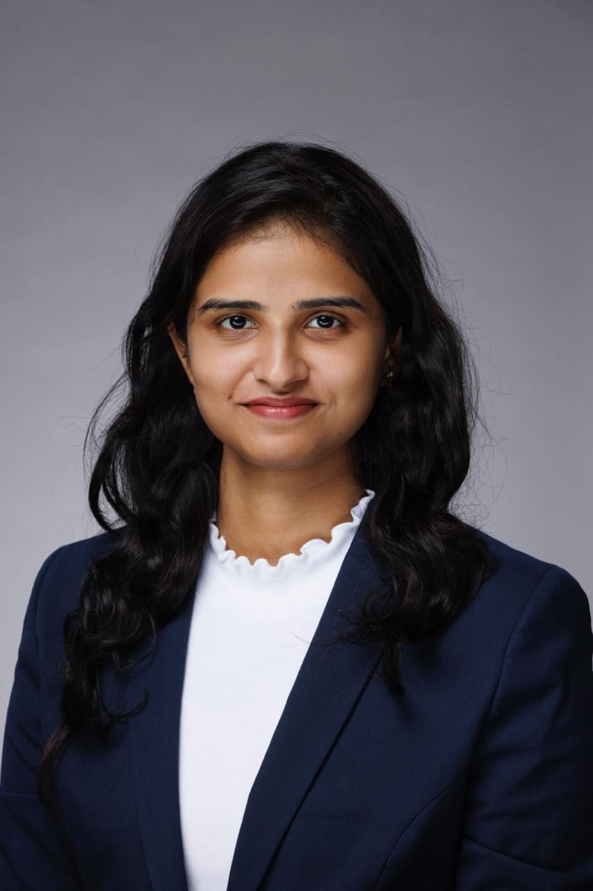

I'm Mounica
Reddypalli
Engineer, strategist, and builder with 6+ years turning complex data into intelligent systems and real business outcomes. I've worked across AI, data engineering, GenAI, and business strategy for Fortune 500 clients — and I'm completing a STEM MBA at SMU Cox to bridge the gap between what's technically possible and what actually drives impact.

Get to Know Me
About Me
I'm Mounica — a technologist and strategist with 6+ years of experience building AI systems, data infrastructure, and GenAI applications for enterprise clients across healthcare, telecom, and public sector in the U.S. I operate at the intersection of engineering and business, translating complex technical capabilities into outcomes that actually matter.
I've built and shipped production systems for Apple, T-Mobile, Google, and Northwell Health — spanning ML engineering, data pipelines, conversational AI, RAG, and cloud infrastructure on AWS, GCP, and Azure. Alongside the technical work, I've contributed to strategy and consulting engagements through my MBA, advising healthcare and technology organizations on growth and market positioning.
Currently expanding into agentic AI and LLM systems through the IBM RAG & Agentic AI Professional Certificate — building multi-agent workflows, LangGraph pipelines, and multimodal applications that push what's possible with today's AI.
Academic Background
Education
Work History
Experience
Selected Work
Projects
Academic Contribution
Research
Technical Expertise
Skills
Credentials
Certifications
Recognition
Achievements
Outside the Office
Beyond Work
Outside of work, I enjoy activities that challenge how I think and approach problems. I love puzzles and escape rooms, anything that encourages experimentation, creativity, and critical thinking.
Painting is another creative outlet — a way to slow down, experiment with color, and express ideas without code or frameworks.
On the adventurous side, I once visited Kundanbagh in Hyderabad, India — one of the most well-known haunted locations in the country. Equal parts terrifying and unforgettable.
Curiosity, continuous learning, and adaptability guide both my personal and professional journey.
Let's Connect
Contact
Open to full-time roles in AI Data Engineering, Data Science, and Strategy.
I'm completing my STEM MBA at SMU Cox and actively exploring opportunities where I can bring together 6+ years of hands-on AI/ML and data engineering experience with business strategy to build impactful, scalable AI products.
Whether it's a role, collaboration, or just a conversation — reach out via email or LinkedIn. I'd love to connect.